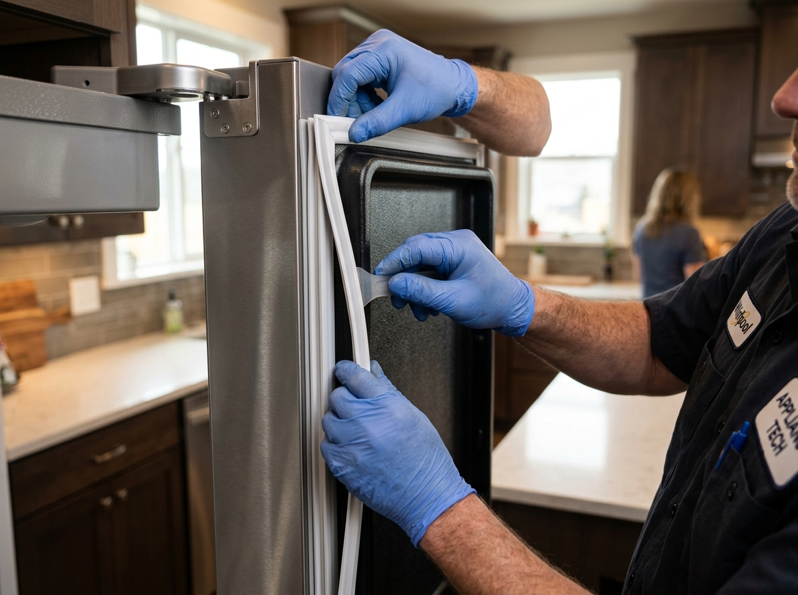

LG French Door Refrigerator Repair
Stop warm air infiltration, heavy frost build-up, and cooling issues with specialized LG French door refrigerator repair in Littleton, CO. We provide precision door realignment, factory magnetic gasket replacements, hinge bushing rebuilds, and auto-closer repairs for all major refrigerator brands.

Heat-formed magnetic door gaskets installed with zero air gaps or moisture leaks.
Why Refrigerator Door Seals Matter
Your refrigerator's door seals are the only barrier keeping ambient kitchen warmth and humidity from infiltrating your refrigerated compartment. In Littleton, dry winter air and high summer heat make a compromised seal force your compressor to run non-stop. If your refrigerator door sags, pops open when the other door closes, or develops moldy tears in the rubber folds, our technicians perform precision hinge adjustments and custom heat-formed gasket installations to restore airtight performance.
Common Door & Gasket Problems We Repair
Cracked or Torn Magnetic Gaskets
Rubber door seals dry out, crack, or tear at the corners, allowing ambient air to seep into the cabinet. This causes moisture condensation along the door face and leads to heavy frost blanketed across coils.
Sagging or Misaligned French Doors
Heavy door bins full of milk jugs and condiments strain bottom hinge pins over time, causing the door to sag by up to half an inch. The central mullion flap fails to engage and cold air bleeds through the center gap.
Door Pops Open Automatically
When closing one French door or the bottom freezer drawer causes the opposite door to bounce open. This is caused by broken nylon cam-risers (door closers) or worn door stop brackets that fail to hold the door firmly shut.
Freezer Drawer Bouncing or Sticking
Pull-out freezer drawers jumping off glide tracks or failing to seal tight against the cabinet. Ice builds up on the floor of the freezer and drawer glides grind with metal-on-metal friction.
Condensation & Sweating Door Edges
Water droplets sweating along the metal door frame indicate that the perimeter mullion heater has failed or that the gasket is warped, creating a thermal bridge between humid room air and cold cabinet interior.
Door Chime Alarm Won't Stop Beeping
A door ajar alarm keeps beeping even when the door appears closed. This happens when door sag misaligns the magnetic reed switch sensor or when the door trigger magnet falls out of its mounting pocket.
Our Door Repair & Sealing Protocol
We follow strict manufacturer tolerances to restore airtight compression and effortless auto-closing motion.
-
01
360-Degree Perimeter Compression Test
We perform paper pull tests across all four sides of each door to identify invisible gaps, warps, and weak magnetic strips.
-
02
Cabinet Leveling & Diagonal Square Measurement
Doors cannot seal properly if the refrigerator cabinet is twisted or tilted forward. We level the front adjustable leveling legs.
-
03
Heat-Formed Gasket Installation
New rubber gaskets are heat-treated with industrial heat guns to eliminate packaging wrinkles and ensure immediate airtight vacuum grip.
-
04
Cam-Riser & Hinge Bushing Replacement
We replace cracked nylon hinge cams to restore smooth, automatic self-closing action so doors never get left ajar accidentally.
Save Energy & Protect Groceries
A worn refrigerator door gasket leaks as much energy as leaving a 60-watt light bulb on 24 hours a day. Replacing worn seals pays for itself in reduced electric bills and prevented food spoilage.
Door & Seal Repairs For All Major Brands
Sub-Zero & Luxury Built-In
Custom magnetic perimeter gaskets and heavy-duty spring-loaded hinge cartridges.
Samsung & LG French Door
Articulating center mullion flap repairs, door reed switches, and cam-closer kits.
Whirlpool & KitchenAid
Bottom freezer drawer rack-and-pinion synchronization and glide track repairs.
GE & Frigidaire Side-by-Side
Water dispenser door paddle switches, ice chute flapper seals, and hinge shims.
Solving Common LG French Door Refrigerator Problems
French door refrigerators provide superior capacity, but their dual-door design and articulating center mullion make them vulnerable to door alignment faults, gasket leaks, and ice room frost clogs.
01. Ice Maker Freezing & Dispenser Clogs
When French door gaskets lose their tight seal, warm kitchen air leaks into the cabinet and directly impacts the LG French door refrigerator ice maker compartment. Frost blankets the fill tube and ejector blades, causing ice cubes to melt together or stop harvesting.
To fix ice maker LG French door refrigerator issues triggered by air infiltration, our technicians inspect the ice room door flapper, replace worn magnetic gaskets, and test cycle the motor assembly.
02. Door Sagging & Temperature Control
Heavy door bins cause bottom hinge pins to wear down, misaligning the doors and making it difficult to maintain the proper LG French door refrigerator temperature setting (recommended at 37°F for the fresh food section and 0°F for the freezer).
We diagnose common LG French door refrigerator problems, replace damaged nylon hinge bushings, level the chassis, and recalibrate door reed switches so your refrigerator seals airtight and runs efficiently.
Serving Littleton & Neighboring Communities
In addition to Littleton, our certified appliance specialists dispatch daily to neighboring South Denver communities:
Denver County, CO
French door alignment, luxury gasket seals & hinge fixes in LoDo & Cherry Creek.
Highlands Ranch, CO
Fast door repairs across Northridge, Eastridge & Westridge.
Englewood, CO
Broadway bungalows, CityCenter lofts & Swedish Hospital corridor.
Centennial, CO
Willow Creek, Smoky Hill, Southglenn & family subdivisions.
Greenwood Village, CO
DTC corporate corridor and upscale residential estates.
Columbine Valley, CO
Columbine Country Club & Polo Reserve custom homes.
Test Your Door Seal at Home: 3 Quick Checks
Before you call, you can check your door seal yourself in two minutes. If any of these three tests fail, the gasket is leaking cold air and costing you money.
Dollar bill test
Close the door on a dollar bill so half sticks out. Try to pull it out. If it slides out easily with no resistance, the magnetic seal is weak at that spot. Test the top, both sides, and the bottom — a seal can fail in one corner and still look fine.
Flashlight test
At night, put a lit flashlight inside the refrigerator and close the door. Turn off the kitchen lights. If you see light leaking through any part of the door edge, air is leaking there too.
Look and feel
Run your finger along the rubber seal. Cracks, tears, hard or brittle rubber, black mold spots, or condensation and frost near the door edge all mean the gasket is failing. A healthy seal is soft, flexible, and sits flat against the cabinet.
How Much Does Refrigerator Door Seal Replacement Cost in Littleton?
Most refrigerator door seal and gasket replacements in Littleton fall within our standard $180-$450 range. The exact price depends on three things: your fridge brand and model, whether it is a standard or built-in unit, and whether the hinges or door closer also need work.
Our diagnostic fee is credited toward your total repair cost if you approve the repair. We give you an upfront written quote before starting any work — no hidden charges. Call (720) 473-5289 and tell us your brand and model. We can usually give you a firm price after a quick inspection on the same visit.
How Long Does a Door Seal Repair Take?
Most door seal replacements are finished in a single visit, usually within one to two hours. We carry common OEM gaskets for Samsung, LG, Whirlpool, GE, Frigidaire, and KitchenAid on our trucks.
Built-in and luxury units like Sub-Zero and Wolf sometimes need a custom-ordered gasket. In that case we measure and order the exact part, then return to fit it — usually within a few days. Every door repair comes with our 90-day warranty on parts and labor.
Refrigerator Door Repair FAQs
Clear answers regarding door gasket replacement, hinge adjustments, and warranties.
How do I know if my refrigerator door gasket needs replacement?
A simple dollar bill test: close the door on a dollar bill. If the bill pulls out easily without resistance, the magnetic gasket is worn or warped and leaking cold air.
Why does my refrigerator door pop open when I close the other door?
In French door refrigerators, closing one door compresses internal air. If door gaskets are stiff or hinge cam-closers are worn, the opposite door pops open. We replace worn nylon cam-risers and adjust door alignment.
Can you fix a sagging refrigerator door?
Yes. Sagging is usually caused by worn hinge pin bushings or loose mounting brackets. We install precision hinge shims, replace nylon bushings, and level the cabinet.
How can I fix ice maker LG French door refrigerator issues caused by door seal leaks?
To fix ice maker LG French door refrigerator problems caused by warm air leaks, check if the freezer door or ice room gasket is cracked or misaligned. Leaking warm air creates frost that jams the LG French door refrigerator ice maker. We replace damaged magnetic door seals and realign French doors to restore reliable ice production.
What is the recommended LG French door refrigerator temperature setting if my doors are leaking air?
The factory-recommended LG French door refrigerator temperature setting is 37°F for the fresh food compartment and 0°F for the freezer. If door seals are leaking or the center mullion is misaligned, lowering the temperature will not solve the issue and will overwork the linear compressor. Certified technicians should inspect your door gaskets and hinge closers to resolve these LG French door refrigerator problems.
Do you provide warranties on refrigerator door repairs?
Yes, all door repairs and gasket replacements performed by Refrigerator Repair Littleton CO come with a full 90-day warranty on both parts and labor.